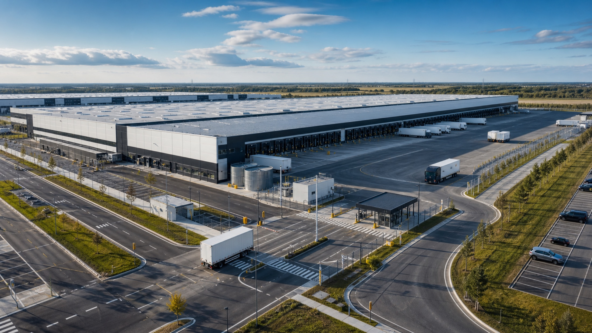

Industrial complex · Rotterdam
Northern Logistics Hub
A 164,000 m² automated distribution campus integrating road, rail and high-throughput warehouse operations.
€186MBudget28 monthsTimeline
View Case StudyDelivering complex industrial, infrastructure and commercial construction projects with precision, safety and innovation.
One accountable team coordinates design, procurement, construction and commissioning across every project phase.

A 164,000 m² automated distribution campus integrating road, rail and high-throughput warehouse operations.
Digital coordination, disciplined controls and safety-led execution keep complex programs predictable.
Feasibility, risk, scope and delivery strategy.
Integrated design and constructability planning.
Controlled construction, quality and safety.
Commissioning, handover and lifecycle support.